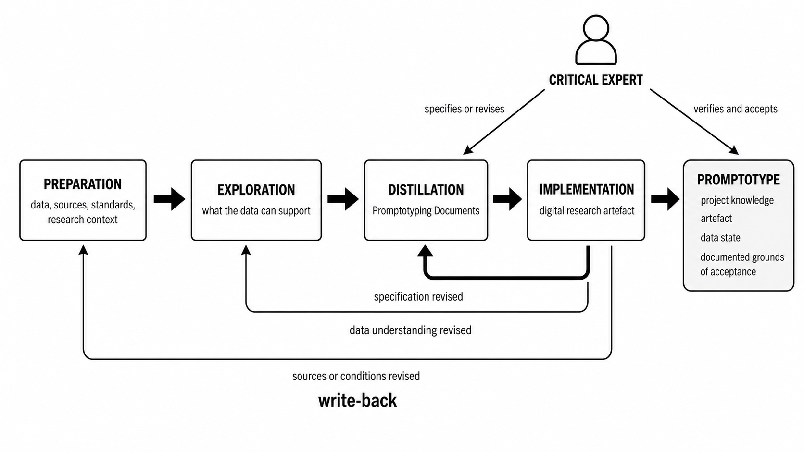
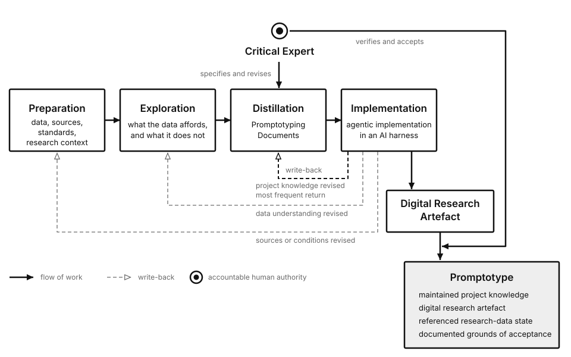
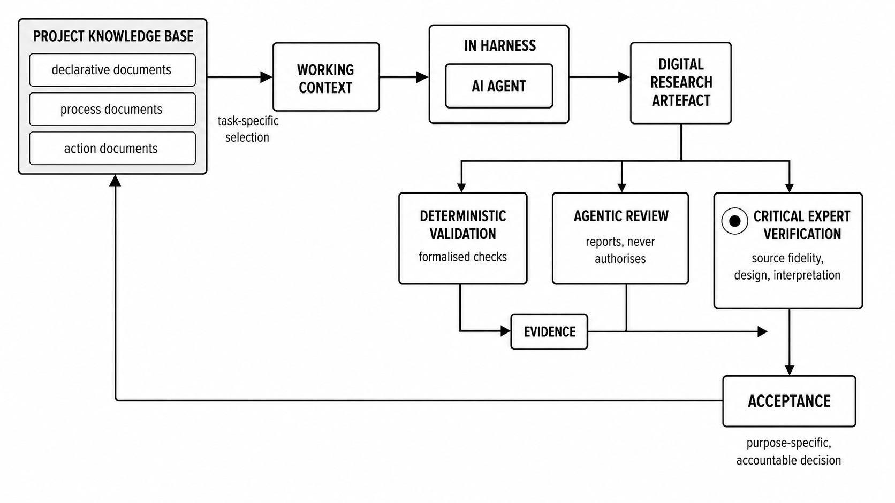
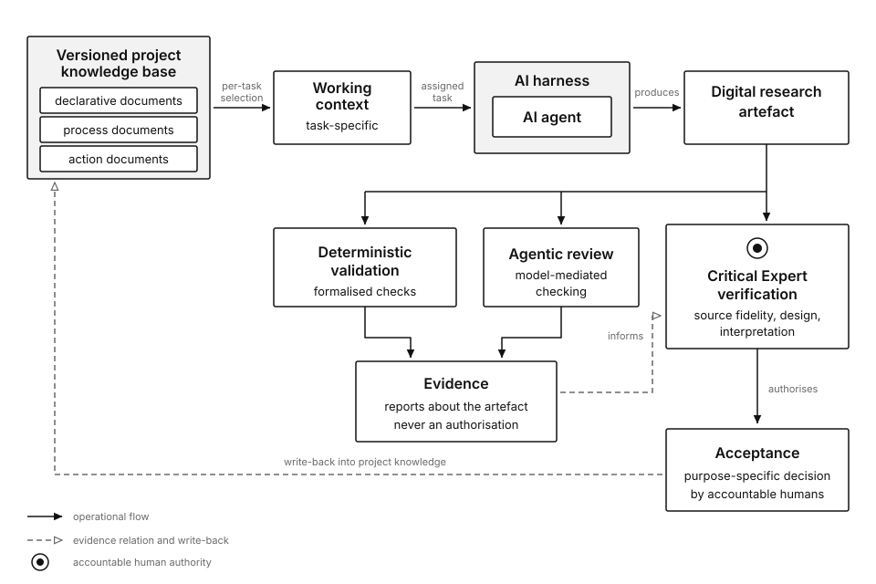
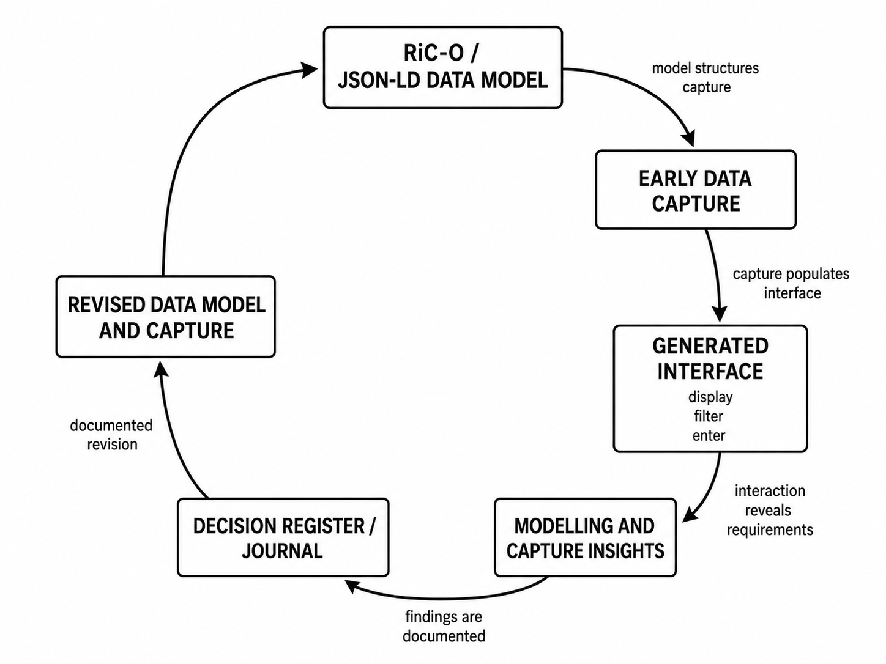
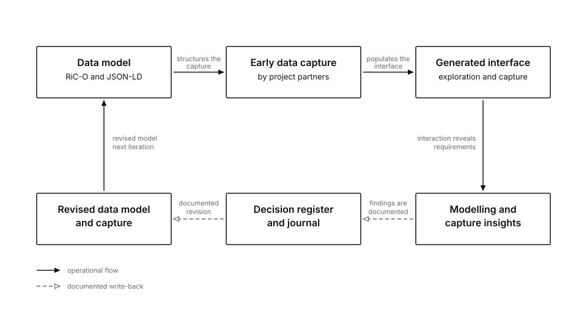
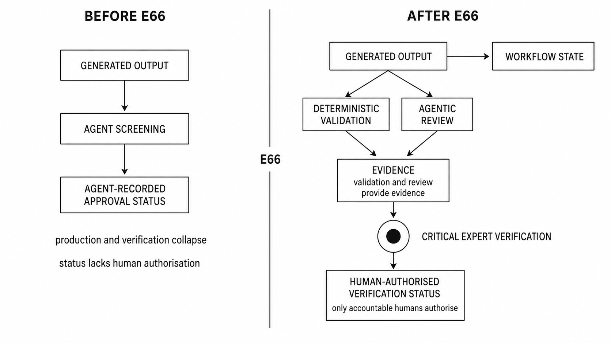
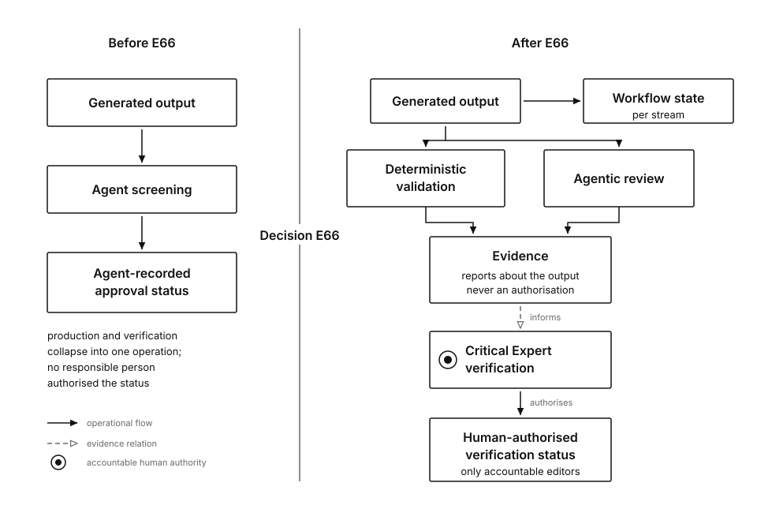
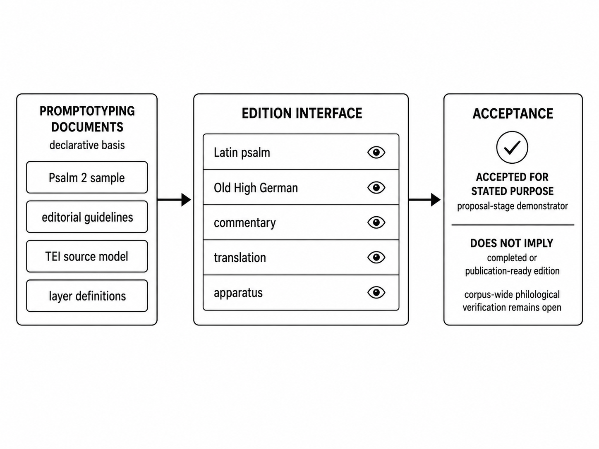
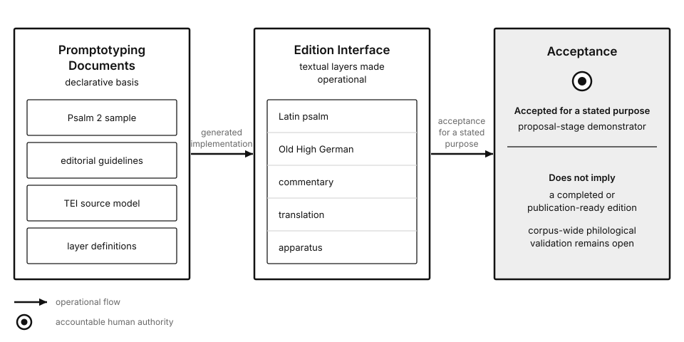

Figure proof sheet, Promptotyping paper
Each of the five manuscript figures appears twice, on the left the accepted raster from the interactive image generation of 2026-07-29, on the right the authored SVG built from a written specification. The caption above each pair is the manuscript text the figure has to satisfy. The question for review is whether the right-hand version carries every statement of the caption and whether the five together read as one system.
Figure 1, The Promptotyping method
Figure 1. The Promptotyping method. Preparation, Exploration, Distillation, and Implementation are recurrent forms of work rather than fixed stages. Findings arising from Implementation may return the work to earlier forms, most frequently to Distillation. The Critical Expert specifies and revises the knowledge documents and verifies the resulting artefact. Purpose-specific acceptance connects maintained project knowledge, the digital research artefact, the referenced research-data state, and the documented grounds of acceptance as an identifiable promptotype.


- The three returns became dashed with an open head, so the corrective path is distinguishable from the productive one at a glance.
- The claim about frequency moved from line weight into the label "most frequent return", which keeps stroke widths uniform across the series.
- The human figure became the disc mark used throughout the series, and the legend now names it.
Figure 2, Project knowledge, working context, implementation, and authority
Figure 2. Project knowledge, working context, implementation, and authority in Promptotyping. Task-specific working context is assembled from the versioned project knowledge base and, where required, from retrieved source material or derived context artefacts. An AI agent operating within a harness carries out bounded implementation and revision tasks that produce or modify a digital research artefact. Deterministic validation and agentic review provide evidence about the artefact but do not authorise scholarly claims. Critical Expert verification assesses source fidelity, design, and interpretation, and only responsible human contributors accept an iteration for its stated purpose.


- Evidence reaches Critical Expert verification on a dashed arrow labelled "informs", so the non-authorising status of validation and review is carried by the line type as well as by the wording inside the evidence box.
- The knowledge base is marked as versioned, which the caption states and the raster left implicit.
- The tint now means one thing across the series, a container whose named constituents are drawn inside it, which here covers the knowledge base and the harness.
Figure 3, Prospective Promptotyping in M³GIM
Figure 3. Prospective Promptotyping during modelling and data capture in M³GIM. The emerging data model shaped the generated exploration and capture environment, while interaction with the environment exposed requirements and limitations that informed documented revisions. The case shows how a promptotype can participate in the formation of project knowledge rather than merely implement an already stabilised model.


- The circle became a racetrack, which suits a landscape column and lets every transition carry its label without crossing lines.
- The two transitions that pass through the record are dashed, so the documented write-back is visible as such inside the circuit.
- The figure carries no authority mark, because the caption makes no claim about who verified or accepted in this case.
Figure 4, The ZBZ OCR/TEI workflow before and after decision E66
Figure 4. The ZBZ OCR/TEI workflow before and after decision E66. Before E66, an agent-generated assessment could appear as an authorised approval state. In the revised workflow, deterministic validation and agentic review contribute evidence, while only accountable editors authorise verification and acceptance. The project-specific failure also produced method-level write-back in the rule that an agent must never record approval, verification, or acceptance that a responsible person has not explicitly granted.


- The disc appears once in the whole figure, on the right side. Its absence on the left is the visual form of the failure the case describes.
- The divider carries the decision rather than a release, which is what the manuscript records for E66.
- Verification now sits inside a box like every other station, so the right side reads as a workflow rather than as a chain interrupted by an ornament.
Figure 5, Purpose-specific acceptance in the Notker edition case
Figure 5. Purpose-specific acceptance in the Notker edition case. Editorial guidelines, a TEI source model, and a limited sample were translated into an Edition Interface. The resulting state was accepted as a proposal demonstrator, not as a completed or publication-ready edition.


- The eye icons of the raster are gone. They carried no information, and the rows are the modelled layers.
- The tick mark became the disc used throughout the series, so acceptance is marked as a human decision rather than as a completed check.
- The negative half of the acceptance card keeps the manuscript wording and holds the same visual weight as the positive half.
Shared visual grammar of the new series
All five vectors carry one type scale, one stroke weight, one arrowhead geometry, and one meaning per visual distinction. Every figure that uses a distinction repeats it in a legend inside the figure.
| Device | Meaning | Used in |
|---|---|---|
| Solid line, filled head | Operational flow and authorising acts | All five |
| Dashed line, open head | Supporting relation, which covers write-back and the evidence relation | Figures 1, 2, 3, 4 |
| Open circle with a filled disc | Accountable human authority, the only filled mark in any figure | Figures 1, 2, 4, 5 |
| Tinted rectangle | Container whose named constituents are drawn inside it | Figures 1, 2, 5 |
| Type, 16px semibold | Element names, always the manuscript's own terms | All five |
| Type, 13px regular | Secondary description inside an element | All five |
| Type, 11px grey | Edge labels and legend | All five |
| Palette | Black on white with three greys, no colour anywhere | All five |